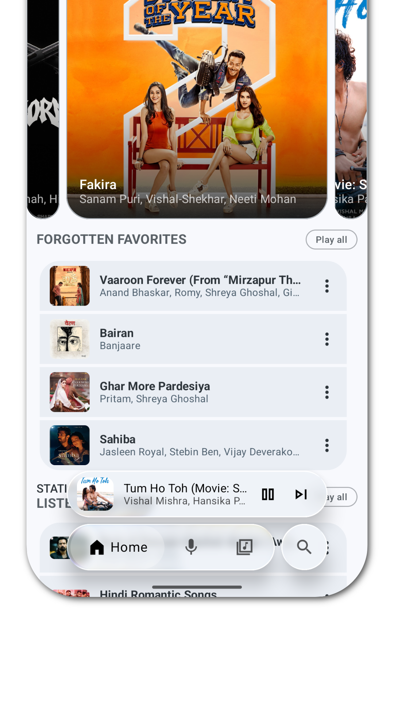

为什么 Echo Music 从不打断你的歌？拆解端内智能队列的设计取舍
大多数音乐 App 的推荐队列像个莽撞的主持人，总会在你沉浸时突然插进来一首陌生的歌。Echo Music 为什么能做到"不打断"？它的端内引擎藏着一套关于聆听动量的精巧设计。
一个被低估的体验细节
我对音乐 App 的评价标准一直很苛刻——不是音质、不是曲库量，而是它会不会打断我正在听的歌。
这听起来像是个小事，但用过的人都懂：你正沉浸在一首后摇的铺垫段里，系统突然跳进来一首推荐的流行歌，那个瞬间整个聆听流就碎了。Spotify 的 Discover Weekly、YouTube Music 的智能电台、甚至 Apple Music 的 For You，或多或少都有这个问题。它们的算法在背后兢兢业业地工作，但前端的表现像个莽撞的主持人——不管你现在是什么状态，强行把下一个节目塞进来。
Echo Music 的官网上把这个设计叫"永不打断原则"，在这件事上它让我刮目相看。用了几周之后我才意识到：它从来没有在我听歌途中插进来过一首推荐歌。不是没有推荐，而是它选的时机太准了——总是在一首歌快结束的那几秒窗口里静默地把下一首塞好，然后顺着交叉淡入淡出无缝接过来。我甚至有时候会恍惚："这首推荐的歌……是我自己点的吗？"
这不是什么玄学体验，它的背后是一套叫 Echo Brain 的端内智能队列引擎。我翻了它的Echo Music文档，发现这套设计比表面看起来精巧得多——它选择了一条和行业主流完全不同的技术路线。
不走云端，走手机本地
先看一个关键的设计决策：Echo Brain 全部在手机本地运行，不依赖云端大模型。
在 2026 年这个时点，说一个智能功能"全部本地运行"听起来像是在承认能力不足——大家都在卷云端推理、卷参数量，你一个音乐 App 的推荐引擎不接 GPT 都不好意思打招呼。但 Echo Music 的开发者偏偏反其道而行之。
为什么？我猜是因为他们想解决的那个问题——"不打断"——从根本上就不能等云端。
想象一下：你正在听一首歌，还有 5 秒结束。如果推荐引擎在云端，它需要做的是：上传你当前的听歌状态 → 服务器跑推理 → 返回候选列表 → 客户端收到后插入队列 → 触发交叉淡入淡出。这整条链路哪怕只花 2 秒，留给客户端的操作窗口就只剩 3 秒了——网络抖一下、服务器慢一拍，这个窗口就错过了，要么真的断一次，要么推荐就失效了。
本地引擎没有这个问题。时延可以做到毫秒级——当 Echo Brain 在后台捕捉到"当前歌曲剩余时长进入阈值窗口"这个事件时，它已经带着算好的候选列表在等着了。歌还没结束，推荐队列就已经准备好了。
但本地运行的代价也很明显：算力受限。手机上跑不了大模型，也存不下全量曲库的 embedding 向量。Echo Brain 怎么在有限算力里做出像样的推荐？
动量向量：把"我现在想听什么"数学化
Echo Brain 的核心数据结构叫 "动量向量"（listening momentum vector）。这不是一个机器学习模型，而是一组规则引擎式的实时特征组合。它在后台持续观察这些信号：
- 你正在听的这首歌的风格标签、艺人、专辑、播放量
- 你刚听完的上一首和上上首是什么——注意不是历史全部，只看最近三首
- 当前时间段：早上通勤？深夜睡前？周末下午？
- 你手机上 Echo Music 当前的主题——没错，主题也是信号：你用 Liquid Glass Apple Inspired 主题，暗示你偏好可能偏流行、民谣；你用 Material You 主题，可能更倾向摇滚或电子
- 历史完整率：这首歌你是第一次听，还是已经在循环第三遍了
把这些特征打包成一个轻量向量，带着它去曲库匹配候选。候选来源大概分几档：同艺人的其他歌、同专辑剩余曲目、同曲风不同艺人、相似时间段历史听过的歌、你点过"喜欢"的艺人的新歌。
这听起来好像也没什么特别的——不就是特征工程吗？但它的精妙之处在于：它只看最近的、局部的、上下文里的信号，不碰全局历史偏好。大多数音乐推荐系统会给你算一个"你这个人喜欢什么"的大画像，然后用这个画像去套所有场景。Echo Brain 反过来——它不关心你这个"人"，只关心你此刻这个聆听流。
早上通勤听了三首民谣，动量向量就被民谣占满了，它就给你继续塞民谣，直到这个聆听动量自然衰减。深夜睡前你突然开始播一段古典，它不会管你白天听了多少摇滚，直接切换到古典频道。
这就是为什么它能做到"不打断"——因为它根本不试图纠正你的方向，它只是顺着你正在走的那条路往前走。

插入策略：在哪里插队，比插什么更重要
就算有了好的候选队列，插入位置也是个难点。Echo Brain 不会简单地把候选堆到队尾，它会根据当前队列的来源决定插入位置：
- 如果当前队列本身就是 Echo Brain 生成的 → 直接续上，相当于和自己协商，没有冲突
- 如果队列是你手动选的一张专辑 → 插在整张专辑结束的位置，不会在专辑中途硬塞
- 如果队列来自 Smart Queue（另一个队列引擎）→ 和它协商，找 Smart Queue 的间隙插进去
这些规则听起来很朴素，但我能想象到实现时的麻烦——Smart Queue 和 Echo Brain 是两套独立的引擎，要让它们在同一个队列里协作而不打架，底层肯定有一套队列状态机在做协调。文档里提到了这件事，但具体实现细节没公开。
还有那个核心原则：永远不打断正在播放的歌曲。Echo Brain 只在"一首歌即将结束、下一首还没定"的窗口插入——大约是每首歌最后 5~10 秒。这个时间窗口就是整个引擎的生命线，所有计算都要在这个窗口里完成。
这套设计的代价
聊完精妙之处，也得说实话：这套端内、局部、动量驱动的设计不是银弹，它在几个场景下会失效。
第一，离线时 Echo Brain 完全不工作。它需要在线拉取候选池，断网了它就是个哑巴。这和它的底层数据源有关——Echo Music 的曲库来自 YouTube Music，不是本地索引。Smart Queue 可以离线（因为它基于历史偏好的离线算法），但 Echo Brain 不行。
第二，新用户冷启动粗糙。刚从官方下载装 Echo Music 的前几天，你的聆听历史太少，动量向量的特征维度缺了大半——没有"刚听完的上一首"、没有时间段模式、没有主题关联的偏好证据。这时候 Echo Brain 的推荐质量会明显下降，可能就是简单的同艺人续歌，谈不上什么智能。
第三，它不理解歌词。Echo Brain 分析的是风格标签、艺人、专辑这些结构化信号，对歌词内容完全无感。如果你正在听一首关于离别主题的歌，然后自然过渡到另一首同主题但不同风格的歌——Echo Brain 做不到这种"情绪衔接"。从这个角度看，云端大模型在这里确实有优势，它能理解语义。
适合谁，不适合谁
用了一个月下来，我大概摸到了 Echo Brain 的甜区。
如果你听歌是有场景的——早上通勤固定节奏、深夜睡前固定氛围、周末做家务固定背景音——Echo Brain 会非常好用。它捕捉到的"时间段 + 风格"信号足够稳定，能一直顺着你的当前状态往下续，不会突然拐个弯把你带到陌生的地方。
如果你听歌是探索型的——想让推荐引擎帮你发现完全没听过的艺人、完全不同的风格组合——那 Echo Brain 可能让你觉得太保守了。它的候选池边界是"同艺人 / 同专辑 / 同曲风"，不太会跳出舒适区。这时候 Smart Queue 或首页的信息流推荐反而更有惊喜。
还有一个值得提的点：Echo Brain 的所有参数都可以手动调——激进程度（保守 / 平衡 / 激进）、每次最大插入数量（默认 1，最多 5）、插歌曲类偏好（同艺人 / 同专辑 / 同曲风）。这种"智能 + 可配置"的思路我很喜欢：默认值照顾大多数人想不被打扰的需求，但如果你想让它激进一点，完全可以自己调。
我为什么在意这件小事
可能有人会说，不就是个推荐时机的问题吗，至于上升到"设计取舍"？
我在意的是产品的选择方向。在一个所有 App 都在往云端大模型、往"全知全能"方向卷的时候，Echo Music 选择把核心体验（不打断）作为第一优先级，然后为了这个优先级去设计一套完全不同的技术栈——本地运行、只看局部、动量驱动。
这条路不是唯一正确的路，但它是有态度的路。它从一个真实的用户痛点出发，倒推技术选型，而不是先接个最火的 API 再去想怎么包装成功能。
说实话，我用 Echo Music 也有烦的时候——离线没推荐、新用户阶段体验差、有时候就是想让它帮我探索点新东西但它只会续歌。但每当我沉浸在一首歌里，然后另一首歌自然接过来的时候，我还是会觉得：这套设计，值。想深挖技术细节的话，GitHub、Gitee、GitCode 三个平台都有相关源码和说明。